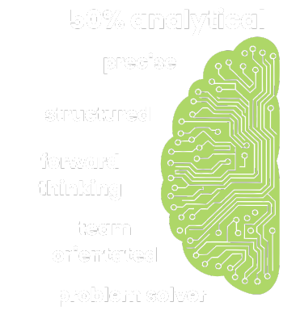

Education
My academic path has been an important foundation in shaping how I approach problem-solving and structure complex ideas. This section outlines recognized programs and learning environments that have contributed to my growth.
Qualifications
-
Bachelor of Commerce BComm (Hons) Statistics
Stellenbosch University
Statistical Quality Control, S-Plus/R, Data Mining, Experimental Design, Multivariate Methods, Sampling Techniques, Stochastic Models, Applied Stochastic Simulation, Applied Times Series Analysis
Student assistant to Department of Actuarial Science and Statistics
Certifications
-
ICS 200
Vulcan Wildfire Management
IS200, Basic Incident Command System for Initial Response, reviews the Incident Command System (ICS), provides the context for ICS within initial response, and supports higher level ICS training. This course provides training on, and resources for, personnel who are likely to assume a supervisory position within ICS. Paid for by Western Cape Government.
2022
My Stack


My stack reflects a hybrid background in data science, data reporting & visualization, and full-stack experimentation. From environment management to deployment, these are the tools I am currently using the most in 2025:


Organisations I've worked for
I’ve worked across junior and senior roles that balance analytical rigor with storytelling & product thinking. This section highlights key milestones from my professional journey so far.

Pricing and Advanced Analytics
I Worked as a SAS programmer in the pricing and advanced analytics team at Telesure, putting business strategy into action through technical programming.
Developed predictive models and data-driven insights to optimize pricing strategies, ensuring competitive yet profitable outcomes. Collaborated closely with actuarial and business intelligence teams to refine risk assessment models and enhance data accuracy.
Leveraged large datasets to identify trends, forecast performance, and drive strategic decision-making. Automated key analytical processes to improve efficiency and reduce operational bottlenecks in the pricing workflow.
SAS Programmer
Mar 2013 - July 2014 (full-time)
Credit Decision Support
As a statistician in the Credit Decision Support team at Capitec, I played a key role in developing data-driven strategies to enhance credit risk assessment. I worked with large financial datasets, applying statistical models and machine learning techniques to analyze borrower behavior and predict creditworthiness. My insights helped refine the bank’s credit scoring models, improving risk evaluation while ensuring responsible lending practices.
Beyond model development, I collaborated closely with business analysts and risk managers to translate complex statistical findings into actionable business strategies.
Through my role, I helped Capitec strengthen its data-driven approach to credit decision-making, ultimately supporting financial inclusion and sustainable lending growth.
Statistician
Jul 2014 - Sep 2015 (full-time)
Social Network Analysis
I did advanced analytics consulting for Centbee, a blockchain-based fintech focused on crypto payments and adoption.
My work involved leveraging Python to extract and analyze transactional and behavioral data, providing the team with insights into product usage, wallet activity, and market segmentation. I supported strategic decisions by visualizing trends, identifying patterns, and offering clear, data-led recommendations to improve user retention and platform efficiency. My contribution played a part in sharpening the company’s focus on measurable growth and real-world adoption metrics.
Analytics Consultant
Jun 2022 - Aug 2022 (part-time)
Media Strategy & Production
As founder and director of Hanoi Films, I built a successful boutique media company that delivered creative and strategic content for over 170 clients across four continents.
I led production from concept to delivery, including documentaries, corporate videos, commercials, and social content — often in multiple languages. I thrived in a highly adaptive environment, working with NGOs, startups, and educational institutions to deliver tailor-made digital strategies and media solutions.
My ability to lead diverse teams, implement cloud-based collaboration tools, and streamline the post-production process played a crucial role in building long-term client relationships and scaling the business.
Co-Founder | Director
Jan 2016 - Jan 2022 (full-time)
Strategic Communication
At ACTIP, a regional IP law firm in Southeast Asia, I was brought on as a contract consultant to enhance internal and external communications.
My responsibilities extended beyond language training into business communications strategy — helping partners and legal professionals improve their international client engagement, pitch delivery, and negotiation language.
I tailored workshops and one-on-one sessions that bridged legal nuance and business fluency, empowering the team to present confidently in English across a variety of global legal contexts.
Communications Specialist
Apr 2016 - Apr 2018 (contract)
Communication for Development
Working closely with a senior professor at Hanoi University, I curated and delivered an original course titled Communication for Development, designed to equip students with the skills to use media and storytelling as tools for social impact.
The course blended theory and practice, with an emphasis on intercultural communication, grassroots media, and development strategy. In parallel, I co-led a communication school initiative called Song of Your Heart, where we organised outreach programmes for school students focused on empathy-building, public speaking, and community engagement.
This role deepened my passion for education and development while allowing me to shape meaningful learning experiences for young changemakers.
Lecturer & Programme Coordinator
Jan 2017 - Jul 2019 (contract)
Currency hedge Dashboarding
At Wauko, a dynamic FinTech startup, I built out the company’s analytics infrastructure within the Treasury and Forex divisions. I led the development of an internal financial data app — taking it from initial concept to Azure deployment — and engineered multiple working APIs to automate daily forex data retrieval.
My work included setting up the company’s first Azure-based analytics server within just two weeks. I used a tech stack that included CPython, Java, HTML, and CSS to ensure flexible, scalable, and efficient solutions.
This role fused my passion for software development, financial data systems, and strategic thinking in a fast-moving startup context.
Wau Creator
Aug 2022 - May 2023 (full-time)
Channel Clustering
As part of Engen's Channel Clustering team, I contributed to data-driven strategies for optimizing retail operations across the business. My role focused on identifying and analyzing purchasing patterns, segmenting store clusters, and supporting data-backed decision-making around product placement and merchandising.
In my short time at Engen I became a data steward for my department and also wrote and tested process documentation for channel clustering with BlueYonder software.
Merchandise Analyst
Jun 2023 - Mar 2024 (full-time)
Tennis Coaching
At FLTA, I led tennis coaching and operations at a high-performance academy catering to both local and international players.
As Head Coach and Manager, I was responsible for designing training programs, mentoring junior coaches, and coordinating with parents and international institutions for athlete placement. I fostered a culture of discipline, resilience, and personal growth, balancing elite coaching with day-to-day management of facilities, scheduling, and team leadership.
This role honed my leadership, cross-cultural communication, and organizational skills in a dynamic sports setting.
Head Tennis Coach and Academy Manager
Mar 2019 - Sep 2021 (full-time)
Media Strategy & Production
I joined SoPa, a venture-backed tech startup, as a media producer during a critical growth phase. My role involved leading media production efforts, from storyboarding to editing, for key corporate content.
My standout contribution was creating the company’s realization video — a high-impact, narrative-driven piece that helped secure investment and played a pivotal role in their IPO on the NASDAQ.
Working closely with the executive team, I developed content that aligned with investor messaging and captured the company’s vision in a compelling, visually striking format.
Media Producer
Dec 2019 - May 2020 (contract)
Spasie TV Series, Overberg Region
I worked as Director of Photography for Walla Films for Season 1 of Spasie, a regionally produced television series that has since grown to its third season. My role involved leading all aspects of visual storytelling — from camera setup, lighting design, and shot composition to coordinating with the director and post-production teams.
Working on location in the Overberg, I translated creative vision into compelling visuals that captured the spirit of the show. This project required adaptability, technical precision, and collaboration under tight production schedules, and contributed to the foundational visual identity of the series.
Director of Photography
Dec 2021 - Mar 2022 (contract)Leadership through Sport
While training for the Universities Boat Race, I was invited to coach the U14 novice boys’ rowing team at Somerset College. I developed and led a comprehensive training program focused on introducing students to the fundamentals of rowing — balancing the sport’s discipline and technical rigour with a fun, engaging atmosphere.
I managed all aspects of the team’s logistics, including a week-long rowing camp in Elgin, weekly bus trips to the dam, and coordination of weekend inter-school regattas. Beyond coaching, this role allowed me to mentor and motivate young athletes, fostering their growth in both sport and character.
u14 Rowing Coach
Jul 2009 - May 2010 (contract)Skills that I bring to the Table
My skill set spans design, data, code, and strategy—with an emphasis on adaptability and clarity in execution. Here’s a high-level view of what I’ve developed proficiency in, both technically and creatively.
-
Programming Languages
Python
R
HTML
CSS
JavaScript
SQL
SAS
DAX
read the docs comfortable expertPeople Languages
English
Vietnamese
Afrikaans
German
Dutch
basic proficient nativeAnimal Languages
Cat
Dog
Software
Adobe Cloud
Azure Cloud
Google Cloud
Office 365
Git
Github
SAS
Railway
read the docs comfortable expert -
Data Analysis
Extracting meaningful insights from complex data.Project Management
Managing timelines, deliverables, and resources.Risk Modeling
Building models to identify, quantify, and mitigate financial risks across scenarios.Financial Forecasting
Using historical data and trends to predict future revenue, expenses, or market conditions.DevOps Practices
Automating deployment, version control, and collaboration between dev and ops teams.Design Thinking
Core to my approach — framing problems, ideation, prototyping.Quantitative Analysis
Applying statistical methods to data for strategy or performance evaluation.Cloud Platforms (Azure, ACC, GCP)
Building, deploying, managing applications and data storage in cloud environments.Machine Learning
Developing algorithms that learn from data to predict outcomes or classify patterns.API Integration
Creating RESTful APIs to exchange data and automate workflows.Audience Segmentation
Grouping audiences by behavior, demographics, or needs to tailor strategies.Service Design
Full UX — mapping full end-to-end systems, holistic thinking.Project Scoping
I am strong at defining and managing project boundaries clearly.Stakeholder Engagement
This pairs with my focus on expectation-management.Content Lifecycle Planning
Strategizing content from idea to publication, distribution, and archiving.Technical Writing
I enjoy and am skilled in documentation, proposals, and instructional material. -
I score myself above my general peers in:
Empathy
Expectation Management

Integrity
Collaboration
Active Listening
Adaptability
-

My Main Interests
Outside of work, I’m driven by curiosity—whether it’s reading about behavioral science, exploring new data art, or experimenting with side projects. This section is a snapshot of what keeps me engaged and inspired in life.
-
Fiction
- Branden Sanderson
- Gabriel García Márquez
- Ayn Rand
- Paulo Coelho
- William Golding
Non-Fiction
- Daniel Kahneman
- Yuval Noah Harari
- Michael Lewis
- Malcolm Gladwell
- Bill Bryson
-
I Play
Tennis
I play irregularly and follow the ATP tour.Running
Love park runs and trail routes near my house.Golf
Currently a 14HC and occasional ringer.I Watch
Formula 1
Watch all the race weekends on TV. Go Oscar!Chess Boxing
I enjoy this because you can win by either checkmate or knockout!Isle of Man TT
Follow this every year on TV.
Lexicon
Every domain has its own language. This is my personal glossary — a living list of terms, concepts, and mental models I reference often.
Select a word to see its definition. You can also scroll
Building this site
This site is both a portfolio and a playground—built from scratch to reflect both content and craft. Here’s a quick breakdown of how I designed, developed, and deployed it.
This Project took me just over 80 hours from start to finish. You can see a timeline below: